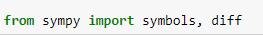

Gradient Descent with multiple parameters

Equation:

Algorithm:

Partial Derivatives:

For a number of iterations, we specify the gradients of each parameters by differentialting the function c(a, b) in respect to their constant. For gradient x, we get the derivative of the function in respect to x or a, for gradient y, we get their respective derivatives
in respect to y. This is called Partial Derivatives

After setting their derivative, we evaluate them both to the initial guess array using (evalf) method. In this case, initial_guess[0] and initial_guess[1].

Because we are working with a three dimensional gradient descent, we merge this 2 gradients into one array by using

After that. Optimize the initial guess by multiplying the multiplier with the gradients and substracting the resulting value to the previous initial_guess

Optimization:

- where we specify hard coded functions such as

- instead of differentialting each time the code run using diff method which is a little bit of extensive when it comes to resources, we instead readily coded the functions to be used that makes the algorithm runs much faster.
- Note: Remember to mind the resouces the algoritm takes.